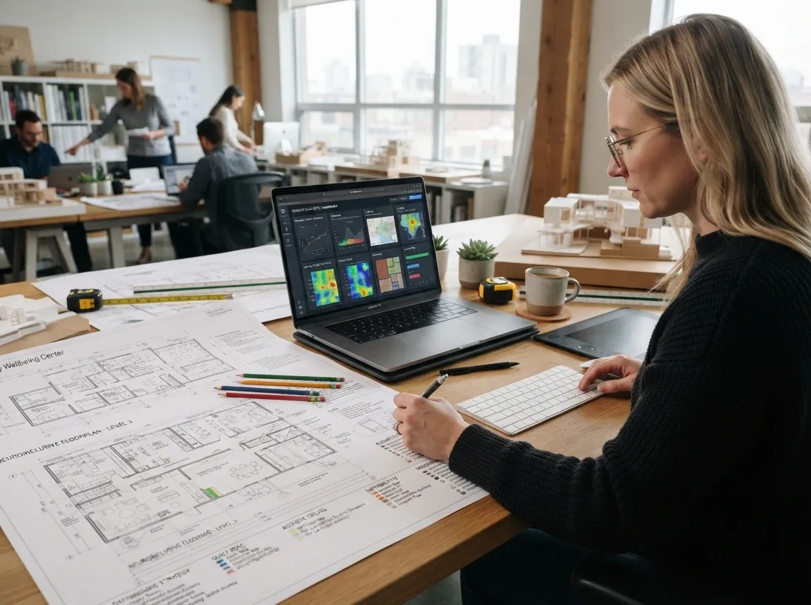
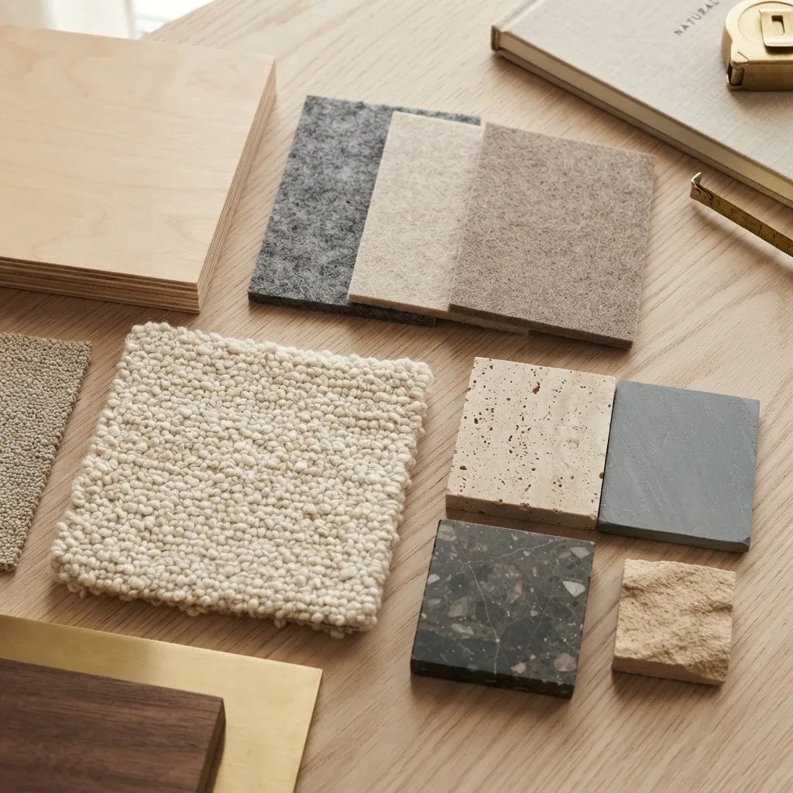
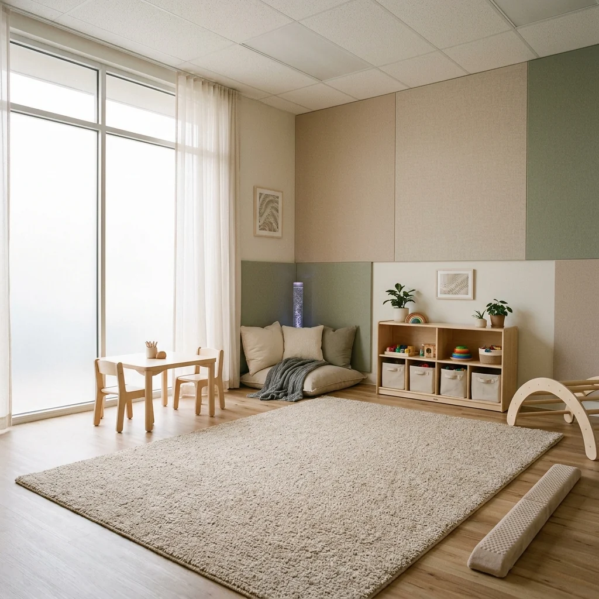
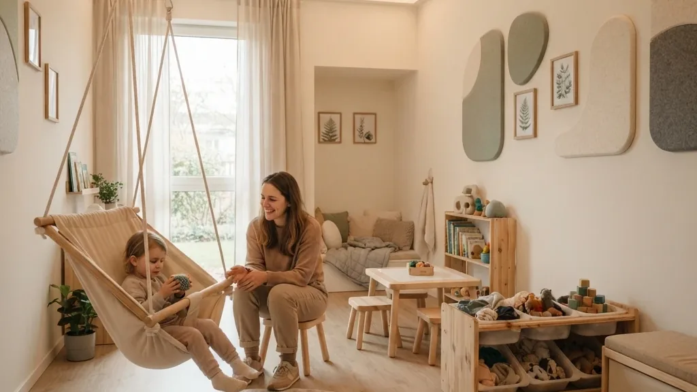
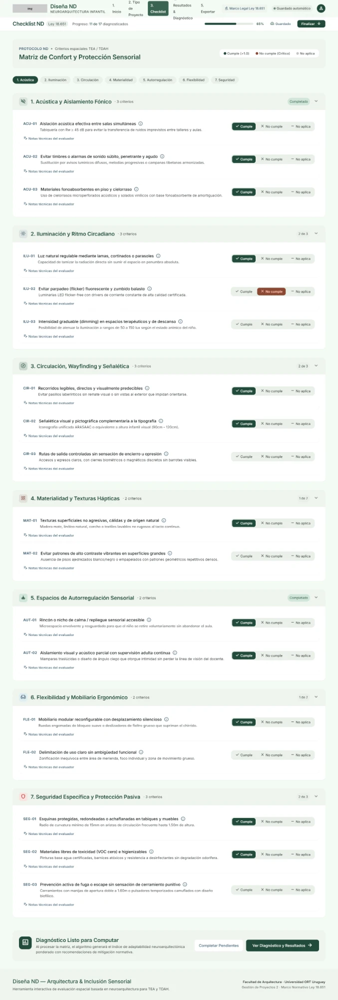

Para un centro terapéutico, es la diferencia entre abrir o no.
Diseña ND capacita a arquitectos para proyectar espacios para niños neurodivergentes en Uruguay, uniendo las exigencias de MSP y BPS con el rigor técnico y el bienestar del usuario.
Marco regulatorio y entidades de referencia técnica

Superá la barrera del cumplimiento formal. Diseñá ambientes capaces de amortiguar la hipersensibilidad sonora y visual sin perder rigor normativo.


Revisá acústica, iluminación y circulación con criterios claros, antes de presentar el proyecto.
Especializate en un tipo de encargo para el que hoy hay muy poca formación en Uruguay.
Obtené un informe de diagnóstico con los puntos críticos y recomendaciones para tu memoria de proyecto.
Arquitectos formados para identificar desde el proyecto los estímulos que más afectan a niños con TEA y TDAH en salas de espera y consultorios.
Detectar los problemas en el plano ayuda a evitar gastos en cortinados dobles o cielorrasos correctivos una vez inaugurado el centro.
Un informe de diagnóstico con los puntos críticos y recomendaciones, para revisar el proyecto con el arquitecto antes de construir.

Qué exige la habilitación y cómo llevarlo al proyecto.
Cómo perciben el espacio los niños con TEA y TDAH.
Decisiones de proyecto para cada aspecto sensorial.
Aplicación sobre un caso real uruguayo.

Evaluá cada criterio como Cumple, No cumple o No aplica, y obtené un diagnóstico por dimensión.
«La normativa es muy extensa y difícil de interpretar. Perdés mucho tiempo releyéndola para estar seguro.»
«Terminamos poniendo parches para corregir errores del diseño anterior.»
«Si me llegara un encargo así, no me sentiría preparado.»
Fragmentos de entrevistas realizadas durante la investigación del proyecto.
personas con diagnóstico de TEA en Uruguay
Fuente: MIDESdimensiones de diseño sensorial evaluadas
Acústica, luz, flujos y materialidadmódulos prácticos aplicados a proyectos
Casos clínicos y educativos localesPrecio total para la primera edición de 20 cupos.
Lo que incluye:
Taller completo: 4 encuentros prácticos en vivo con espacio de resolución técnica.
Acceso a la herramienta Diseña ND: evaluación interactiva y métricas por ambiente.
Informe de diagnóstico: puntos críticos y recomendaciones de proyecto.
Certificado de participación: acreditación con desglose de temáticas y 8h lectivas.
Completá tus datos para avisarte apenas abran las inscripciones formales.
¿Te queda otra duda? Escribinos a contacto@disenand.uy.
No. La preinscripción no implica pago ni compromiso. Te avisamos cuando habilitemos los cupos y ahí decidís si confirmás tu lugar.
Es online: 4 clases en vivo, 8 horas lectivas en total y grabaciones de cada encuentro para repasar cuando lo necesites.
No es requisito. El taller está pensado para arquitectos en ejercicio, recién egresados y estudiantes de arquitectura. El Módulo 1 parte del marco normativo local de MSP, BPS y la Ley 18.651.
Los US$ 119 cubren el taller completo, el acceso a la herramienta Diseña ND, el modelo de informe de diagnóstico y el certificado de participación. La primera edición tiene 20 cupos.
No. Diseña ND es una herramienta formativa y de diagnóstico proyectual orientativo: te ayuda a justificar decisiones, pero la responsabilidad técnica final ante las autoridades habilitantes sigue siendo del arquitecto.